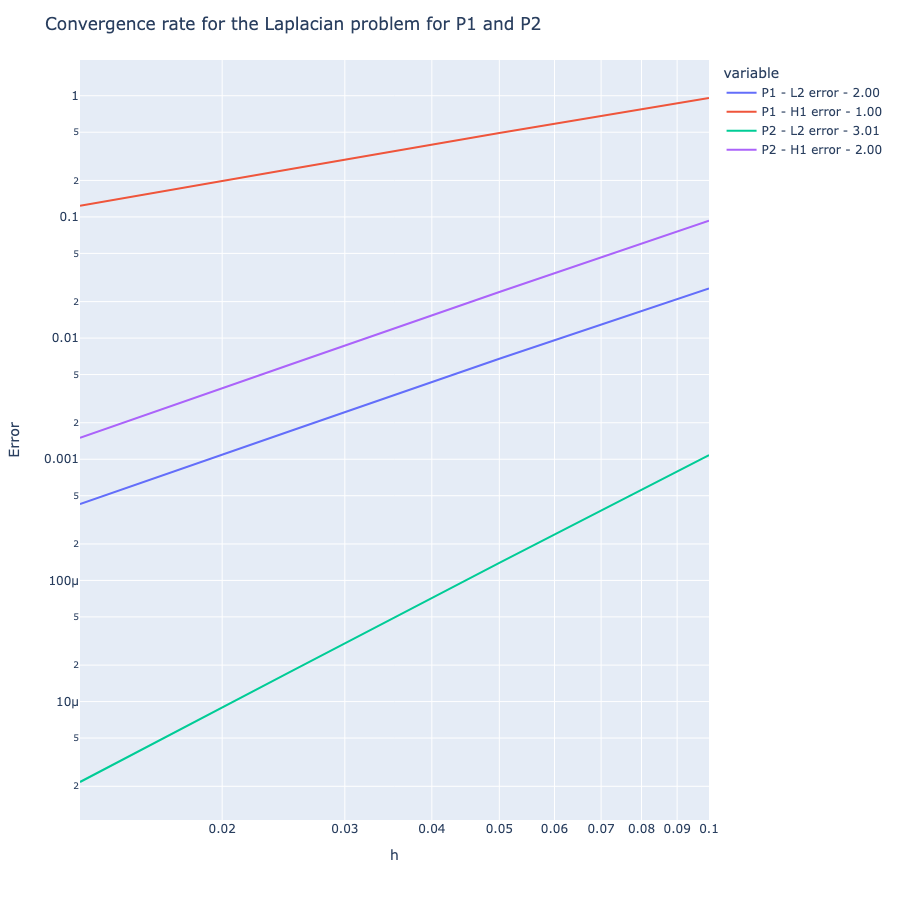

.pdf
.pdf
The Poisson equation with Coefficient Form PDEs toolbox
1. Introduction
This page is devoted to the finite element approximation of coercive problems.
The prototype is the Dirichlet problem: given a function \(f: \Omega \rightarrow \mathbb{R}\), look for a function \(u: \Omega \rightarrow \mathbb{R}\) such that
where \(\Delta u=\sum_{i=1}^d \partial_{i i}^2 u\) is the Laplacian of \(u\).
Equation [laplace], which imposes the nullity of the solution \(u\) on the domain boundary, is called a homogeneous Dirichlet boundary condition.
Other boundary conditions (non-homogeneous Dirichlet, Neumann or Robin) are possible and will be discussed later on.
The problem is used in many physical models, in particular
-
in heat transfer where \(u\) represents the temperature,
-
in electrostatics where \(u\) represents an electric potential,
-
in mechanics where \(u\) represents a vertical membrane displacement, and
-
in hydraulics where \(u\) represents a charge in a Darcy flow.
A second example of a coercive problem is the advection-diffusion-reaction equations with dominant diffusion which we shall study here.
A third example is provided by the mechanics of continuous deformable media in the framework of linear elasticity which we shall study here. In this case, the unknown is a function \(u: \Omega \rightarrow \mathbb{R}^d\) which represents a displacement field.
| Coercive problems provided the first framework for the application of the finite element method, when engineers used this method in the 1950’s to approximate the solution of deformable continuum mechanics problems. |
The mathematical analysis of coercivity problems is relatively simple since it is based on the Lax-Milgram lemma.
2. The mathematical framework
We assume for simplicity that the data \(f\) is in \(L^2(\Omega)\). The weak formulation of the homogeneous Dirichlet problem is the following:
Introducing the functional space \(V=H_0^1(\Omega)\), the bilinear form \(a \in \mathcal{L}(V \times V; \mathbb{R})\) defined by \(a(v, w)=\int_{\Omega} \nabla v \cdot \nabla w\) and the linear form \(f \in V^{\prime}\) defined by \(f(w)=\int_{\Omega} f w\), the problem is written in the following abstract form:
The space \(V\) equipped with the norm \(\|\cdot\|_{1, \Omega}\) (defined by \(\|v\|_{1, \Omega}=\left(\|v\|_{0, \Omega}^2+\|\nabla v\|_{0, \Omega}^2\right)^{1 / 2}\) for \(v \in V\) ) is a Hilbert space and the forms \(a\) and \(f\) are continuous on \(V \times V\) and \(V\), respectively. The only non-trivial property to establish the well-posedness of [laplace-varf] is the coercivity of \(a\) on \(H_0^1(\Omega)\). This results from the following inequality
| the constant \(\ell_{\Omega}\) has the dimension of a length; it can be interpreted as a characteristic length of the bounded open \(\Omega\). |
The Poincaré inequality implies the coercivity of the bilinear form \(a\) on \(H_0^1(\Omega)\) since
The Lax-Milgram lemma allows us to conclude that the problem is well-posed.
2.1. Conforming Approximation
We consider a conformal approximation of problem by Lagrange finite elements. We assume for simplicity that \(\Omega\) is a \(\mathbb{R}^2\) polygon or a \(\mathbb{R}^3\) polyhedron. We consider a regular and conformal family of affine meshes of \(\Omega\) which we denote \(\left\{\mathcal{T}_h\right\}_{h>0}\).
We choose as finite element of reference \(\left\{\widehat{K}, \widehat{P}, \widehat{\Sigma}\right\}\) a finite element of Lagrange such that \(\mathbb{P}_k \subset \widehat{P}\) and \(k+1>\frac{d}{2}\)
We pose
where \(T_K\) is the geometric transformation sending \(\widehat{K}\) into \(K\). The space \(P_{\mathrm{c}, h}^k\) is the space of the functions of \(\mathcal{C}^0(\bar{\Omega})\) which are continuous on the boundary of \(\Omega\) and which are piecewise polynomials of degree \(k\) on each element of \(\mathcal{T}_h\).
In order to construct an approximation space which is included in \(V=H_0^1(\Omega)\), we pose
The elements of \(V_h\) are the functions of \(P_{\mathrm{c}, h}^k\) which are \(0\) on the boundary of \(\Omega\).
We consider the following approximate problem:
which is clearly well-posed since \(a\) is coercive on \(V\) and \(V_h \subset V\).
|
Note on \(\mathbb{P}_1\) or \(\mathbb{Q}_1\) finite element approximation
The generic example of the application of the previous theorem in dimension 2 or 3 is that of the Lagrangian finite element approximation \(\mathbb{P}_1\) or \(\mathbb{Q}_1\), for which, if the problem is regularizing, we have
\[\begin{equation*}
\left\|u-u_h\right\|_{0, \Omega}+h\left\|u-u_h\right\|_{1, \Omega} \leq c h^2\|f\|_{0, \Omega} .
\end{equation*}\]
We thus obtain a convergence to order 1 in \(H^1\) norm and a convergence to order 2 in \(L^2\) norm. |
2.2. Example of homogeneous Dirichlet problem
We now consider an example to illustrate the previous theorem.
We start by initializing the Feel++ environment.
import sys
import feelpp
import feelpp.toolboxes.core as tb
from feelpp.toolboxes.cfpdes import *
import pandas as pd
sys.argv = ["feelpp_cfpdes_poisson"]
e = feelpp.Environment(sys.argv,
opts=tb.toolboxes_options("coefficient-form-pdes", "cfpdes"),
config=feelpp.globalRepository("cfpdes-poisson-homogeneous-dirichlet"))Then we consider the \(\mathbb{R}^2\) domain \(\Omega\) defined by \(\Omega=\left\{x \in \mathbb{R}^2; 0 \leq x_1 \leq 1, 0 \leq x_2 \leq 1\right\}\). We consider the following mesh \(\mathcal{T}_h\) of \(\Omega\) with \(h=0.1\).
def generateGeometry(filename,dim=2,hsize=0.1):
"""create gmsh mesh
Args:
filename (str): name of the file
dim (int): dimension of the mesh
hsize (float): mesh size
"""
geo="""SetFactory("OpenCASCADE");
h={};
dim={};
""".format(hsize,dim)
if dim==2 :
geo+="""
Rectangle(1) = {0, 0, 0, 1, 1, 0};
Characteristic Length{ PointsOf{ Surface{1}; } } = h;
Physical Curve("Gamma_D") = {1,2,3,4};
Physical Surface("Omega") = {1};
"""
elif dim==3 :
geo+="""
Box(1) = {0, 0, 0, 1, 1, 1};
Characteristic Length{ PointsOf{ Volume{1}; } } = h;
Physical Surface("Gamma_D") = {1,2,3,4,5,6};
Physical Volume("Omega") = {1};
"""
with open(filename, 'w') as f:
# Write the string to the file
f.write(geo)
def getMesh(filename,hsize=0.05,dim=2,verbose=False):
"""create mesh
Args:
filename (str): name of the file
hsize (float): mesh size
dim (int): dimension of the mesh
verbose (bool): verbose mode
"""
import os
for ext in [".msh",".geo"]:
f=os.path.splitext(filename)[0]+ext
# print(f)
if os.path.exists(f):
os.remove(f)
if verbose:
print(f"generate mesh {filename} with hsize={hsize} and dimension={dim}")
generateGeometry(filename=filename,dim=dim,hsize=hsize)
mesh = feelpp.load(feelpp.mesh(dim=dim,realdim=dim), filename, hsize)
return mesh
# generate 2D abd 3D meshes
for dim in [2,3]:
mesh = getMesh(f"omega-{dim}d.geo",hsize=0.1,dim=dim,verbose=True)Then we consider the following right hand side \(f\) and the exact solution \(u(x,y) = \sin(2 \pi x) \sin(2 \pi y)\) such that
that way we can check the Convergence theorem of the conforming approximation with the exact solution.
The Coefficient Form PDEs toolbox allows to solve the problem problem with the following code:
def laplacian(hsize, json, dim=2,verbose=False):
if verbose:
print(f"Solving the laplacian problem for hsize = {hsize}...")
laplacian = cfpdes(dim=dim, keyword=f"cfpdes-{dim}d")
laplacian.setMesh(getMesh(f"omega-{dim}.geo",hsize=hsize,dim=dim,verbose=verbose))
laplacian.setModelProperties(json)
laplacian.init(buildModelAlgebraicFactory=True)
laplacian.printAndSaveInfo()
laplacian.solve()
laplacian.exportResults()
measures = laplacian.postProcessMeasures().values()
return measures
laplacian_json = lambda order,dim=2,name="u": {
"Name": "Laplacian",
"ShortName": "Laplacian",
"Models":
{
f"cfpdes-{dim}d":
{
"equations":"laplace"
},
"laplace":{
"setup":{
"unknown":{
"basis":f"Pch{order}",
"name":f"{name}",
"symbol":"u"
},
"coefficients":{
"c":"1",
"f":"8*pi*pi*sin(2*pi*x)*sin(2*pi*y):x:y" if dim==2 else "12*pi*pi*sin(2*pi*x)*sin(2*pi*y)*sin(2*pi*z):x:y:z"
}
}
}
},
"Materials":
{
"Omega":
{
"markers":["Omega"]
}
},
"BoundaryConditions":
{
"laplace":
{
"Dirichlet":
{
"g":
{
"markers":["Gamma_D"],
"expr":"0"
}
}
}
},
"PostProcess":
{
f"cfpdes-{dim}d":
{
"Exports":
{
"fields":["all"],
"expr":{
"u_exact":"sin(2*pi*x)*sin(2*pi*y):x:y" if dim==2 else "sin(2*pi*x)*sin(2*pi*y)*sin(2*pi*z):x:y:z",
"grad_u_exact": "{2*pi*cos(2*pi*x)*sin(2*pi*y),2*pi*sin(2*pi*x)*cos(2*pi*y)}:x:y" if dim==2 else "{2*pi*cos(2*pi*x)*sin(2*pi*y)*sin(2*pi*z),2*pi*sin(2*pi*x)*cos(2*pi*y)*sin(2*pi*z),2*pi*sin(2*pi*x)*sin(2*pi*y)*cos(2*pi*z)}:x:y:z"
}
},
"Measures" :
{
"Norm" :
{
"laplace" :
{
"type":["L2-error", "H1-error"],
"field":f"laplace.{name}",
"solution":"sin(2*pi*x)*sin(2*pi*y):x:y" if dim==2 else "sin(2*pi*x)*sin(2*pi*y)*sin(2*pi*z):x:y:z",
"grad_solution":"{2*pi*cos(2*pi*x)*sin(2*pi*y),2*pi*sin(2*pi*x)*cos(2*pi*y)}:x:y" if dim==2 else "{2*pi*cos(2*pi*x)*sin(2*pi*y)*sin(2*pi*z),2*pi*sin(2*pi*x)*cos(2*pi*y)*sin(2*pi*z),2*pi*sin(2*pi*x)*sin(2*pi*y)*cos(2*pi*z)}:x:y:z",
"markers":"Omega",
"quad":6
}
}
}
}
}
}
# simulate the laplacian problem for 2D and 3D
for dim in [2,3]:
with open(f'laplacian-{dim}d.json', 'w') as f:
# Write the string to the file
import json
f.write(json.dumps(laplacian_json(dim=dim,order=1),indent=1))
# execute the laplacian problem using P1 basis on a mesh of the unit square of size 0.1
laplacian(hsize=0.1,json=laplacian_json(order=1,dim=dim), dim=dim,verbose=True)
# execute the laplacian problem using P2 basis on a mesh of the unit square of size 0.1
#laplacian(hsize=0.025,json=laplacian_json(dim=2,order=2),dim=2,verbose=True)Results
Solving the laplacian problem for hsize = 0.1...
{'Norm_laplace_H1-error': 0.9578973774398879,
'Norm_laplace_L2-error': 0.0256824272246114}
We can proceed with the visualisation of the field u using the following code using pyvista:
from xvfbwrapper import Xvfb (1)
vdisplay = Xvfb()
vdisplay.start()
import pyvista as pv (2)
import os
pv.set_jupyter_backend('panel') (3)
def pv_get_mesh(mesh_path):
reader = pv.get_reader(mesh_path)
mesh = reader.read()
return mesh
def pv_plot(mesh, field, clim=None, cmap='viridis', cpos='xy', show_scalar_bar=True, show_edges=True):
mesh.plot(scalars=field, clim=clim, cmap=cmap, cpos=cpos, show_scalar_bar=show_scalar_bar, show_edges=show_edges)
def myplots(dim=2, field="cfpdes.laplace.u", factor=1, cmap='viridis'):
mesh = pv_get_mesh(f"cfpdes-{dim}d.exports/Export.case") (4)
pv_plot(mesh, field) (5)
pl = pv.Plotter()
contours = mesh[0].contour()
pl.add_mesh(mesh[0], opacity=0.85)
pl.add_mesh(contours, color="white", line_width=5, render_lines_as_tubes=True)
pl.show()
if dim == 2:
warped = mesh[0].warp_by_scalar(field, factor=factor)
warped.plot(cmap=cmap, show_scalar_bar=False, show_edges=True)
else:
slices = mesh.slice_orthogonal(x=0.2,y=0.4,z=.6)
slices.plot()
myplots(dim=2,factor=0.5)| 1 | The xvfbwrapper package is used to run the pyvista visualisation in a virtual display. This is necessary when running the code on a remote server. |
| 2 | The pyvista package is used to visualise the mesh and the field u. |
| 3 | The set_jupyter_backend function is used to set the backend to panel, use static instead to render an image and display it in the notebook. |
| 4 | The Export.case file is generated by the cfpdes toolbox. It contains the mesh and the field u. The pyvista package provides a Ensight case reader to read the Export.case file. |
| 5 | The pyvista package provides a plot function to visualise the mesh and the field u amd the edges of the mesh. |
Results
In 3D, the plots are more difficult to visualise. We can use the pyvista package to visualise the mesh and the field u:
myplots(dim=3)Then we can run the following code to:
-
compute the solution for different mesh sizes and compute the error in \(L^2\) and \(H^1\) norms
-
compute the convergence rates of the error in \(L^2\) and \(H^1\) norms
-
display the errors in \(L^2\) and \(H^1\) norms in a table
-
check that the convergence rates are close to the expected theoretical values
import pandas as pd
import numpy as np
def runLaplacianPk(df,model,verbose=False):
"""generate the Pk case
Args:
order (int, optional): order of the basis. Defaults to 1.
"""
meas=dict()
dim,order,json=model
for h in df['h']:
m=laplacian(hsize=h,json=json,dim=dim,verbose=verbose)
for norm in ['L2','H1']:
meas.setdefault(f'P{order}-Norm_laplace_{norm}-error', [])
meas[f'P{order}-Norm_laplace_{norm}-error'].append(m.pop(f'Norm_laplace_{norm}-error'))
df=df.assign(**meas)
for norm in ['L2','H1']:
df[f'P{order}-laplace_{norm}-convergence-rate']=np.log2(df[f'P{order}-Norm_laplace_{norm}-error'].shift() / df[f'P{order}-Norm_laplace_{norm}-error']) / np.log2(df['h'].shift() / df['h'])
return df
def runConvergenceAnalysis(json,dim=2,hs=[0.1,0.05,0.025,0.0125],orders=[1,2],verbose=False):
df=pd.DataFrame({'h':hs})
for order in orders:
df=runLaplacianPk(df=df,model=[dim,order,json(dim=dim,order=order)],verbose=verbose)
print(df.to_markdown()) (1)
return df
df=runConvergenceAnalysis(json=laplacian_json,dim=2,verbose=True)| 1 | The to_markdown function is used to display the results in a table. |
Results
| | h | P1-Norm_laplace_L2-error | P1-Norm_laplace_H1-error | P1-laplace_L2-convergence-rate | P1-laplace_H1-convergence-rate | P2-Norm_laplace_L2-error | P2-Norm_laplace_H1-error | P2-laplace_L2-convergence-rate | P2-laplace_H1-convergence-rate | |---:|-------:|---------------------------:|---------------------------:|---------------------------------:|---------------------------------:|---------------------------:|---------------------------:|---------------------------------:|---------------------------------:| | 0 | 0.1 | 0.0256824 | 0.957897 | nan | nan | 0.00108252 | 0.0931597 | nan | nan | | 1 | 0.05 | 0.00674339 | 0.492079 | 1.92924 | 0.960981 | 0.000139537 | 0.0240171 | 2.95567 | 1.95564 | | 2 | 0.025 | 0.00170431 | 0.247621 | 1.98429 | 0.990757 | 1.75159e-05 | 0.00601782 | 2.99391 | 1.99675 | | 3 | 0.0125 | 0.000426066 | 0.123856 | 2.00004 | 0.999468 | 2.16968e-06 | 0.00150015 | 3.01311 | 2.00414 |
In 3D, we use the same code to verify the convergence rates of the error in \(L^2\) and \(H^1\) norms. However we do this for different mesh sizes and only in \(\mathbb{P}^1\) to reduce the computational cost which increases significantly with the dimension.
df3d=runConvergenceAnalysis(json=laplacian_json,dim=3,hs=[0.1,0.05,0.03],orders=[1],verbose=True)Again, we observe that the proper convergence rates are obtained.
Results
| | h | P1-Norm_laplace_L2-error | P1-Norm_laplace_H1-error | P1-laplace_L2-convergence-rate | P1-laplace_H1-convergence-rate | |---:|-----:|---------------------------:|---------------------------:|---------------------------------:|---------------------------------:| | 0 | 0.1 | 0.060237 | 1.53146 | nan | nan | | 1 | 0.05 | 0.0157572 | 0.781105 | 1.93464 | 0.971323 | | 2 | 0.03 | 0.00531707 | 0.452647 | 2.12671 | 1.06807 |
Finally we postprocess the results using plotly. The following code allows to
-
plot the error in \(L^2\) and \(H^1\) norms in plotly
-
display the convergence rates in the legend of the plot
-
check that the convergence rates are close to the theoretical values
import plotly.express as px
from plotly.subplots import make_subplots
import itertools
def plot_convergence(df,dim,orders=[1,2]):
fig=px.line(df, x="h", y=[f'P{order}-Norm_laplace_{norm}-error' for order,norm in list(itertools.product(orders,['L2','H1']))])
fig.update_xaxes(title_text="h",type="log")
fig.update_yaxes(title_text="Error",type="log")
for order,norm in list(itertools.product(orders,['L2','H1'])):
fig.update_traces(name=f'P{order} - {norm} error - {df[f"P{order}-laplace_{norm}-convergence-rate"].iloc[-1]:.2f}', selector=dict(name=f'P{order}-Norm_laplace_{norm}-error'))
fig.update_layout(
title=f"Convergence rate for the {dim}D Laplacian problem",
autosize=False,
width=900,
height=900,
)
fig.show()
plot_convergence(df,dim=2)
plot_convergence(df3d,dim=3,orders=[1])Results

3. Other boundary conditions
The previous example shows how to solve a Poisson problem with Dirichlet boundary conditions.
3.1. Inhomogeneous Dirichlet boundary conditions
Given a function \(f \in L^2(\Omega)\) and a function \(g \in \mathcal{C}^{0,1}(\partial \Omega)\) ( \(g\) is lipschitzian on \(\partial \Omega\)), we look for a function \(u: \Omega \rightarrow \mathbb{R}\) such that
|
We can take \(g\) in the fractional Sobolev space \(H^{\frac{1}{2}}(\partial \Omega)\) defined as
\[H^{\frac{1}{2}}(\partial \Omega)=\left\{v \in L^2(\partial \Omega) ; \frac{v(x)-v(y)}{\|x-y\|^{\frac{d+1}{2}}} \in L^2(\partial \Omega \times \partial \Omega)\right\}.\]
|
The hypothesis \(g \in \mathcal{C}^{0,1}(\partial \Omega)\) allows us to assert that there exists a lifting \(u_g\) of \(g\) in \(H^1(\Omega)\), that is to say that there exists a function \(u_g\) in \(H^1(\Omega)\) such that \(\left.u_g\right|_{\partial \Omega}=g\).
Under these conditions, we perform the change of unknown \(u_0=u-u_g\) and consider the following weak formulation:
By the Lax-Milgram lemma, this problem is well posed. We are interested in a conformal approximation of the problem by Lagrange finite elements. We use the discrete framework described previously. We suppose that the data \(g\) is regular enough to admit a lifting \(u_g\) in \(\mathcal{C}^0(\bar{\Omega}) \cap H^1(\Omega)\). We denote \(\mathcal{I}_h^{\mathrm{Lag}}\) the interpolation operator associated with the mesh \(\mathcal{T}_h\) and the finite Lagrangian element of reference \(\widehat{K}, \widehat{P}, \widehat{\Sigma}}\). Recall that \(P_{\mathrm{c}, h}^k\) denotes the \(H^1\)-conformal space based on this finite element and that \(V_h\) is the \(H_0^1\)-conformal approximation space defined in (5.9).
Let \(N=\operatorname{dim} P_{\mathrm{c}, h}^k\) be given. We denote by \(\left\{\varphi_1, \ldots, \varphi_N\right\}\) the nodal basis of \(P_{\mathrm{c}, h}^k\) and by \(\left\{a_1, \ldots, a_N\right\}\) the associated nodes. By definition, for \(u \in \mathcal{C}^0(\bar{\Omega})\), we have
and we also introduce the surface Lagrange interpolation
We consider the approximated problem
which is clearly well posed. We pose \(u_h=u_{0 h}+\mathcal{I}_h^{\mathrm{Lag}} u_g\) so that \(\left.u_h\right|_{partial \Omega}\) coincides with the Lagrange interpolated surface of \(g\).
\(u_h\) is the solution of the problem
| For any surface node \(x_i \in \partial \Omega\), then \(u_h\left(x_i\right)=g\left(x_i\right)\), but in general \(\left.u_h\right|_{\partial \Omega} \neq g\). |
3.1.1. Example
Then we consider the \(\mathbb{R}^2\) domain \(\Omega\) defined by \(\Omega=\left\{x \in \mathbb{R}^2; 0 \leq x_1 \leq 1, 0 \leq x_2 \leq 1\right\}\). We consider the following mesh \(\mathcal{T}_h\) of \(\Omega\) with \(h=0.1\).
We shall replace the exact solution by \(u(x,y)=\sin(2\pi x) \cos(2\pi y)\) which yields
the boundary condition \(g=0\) is replace by \(h=u\) on \(\partial \Omega\).
# get the laplacian json model
def laplacian_g_json(dim,order=1):
j=laplacian_json(dim=dim,order=order)
if dim == 2:
j['Models']['laplace']['setup']['coefficients']['f']=f'8*(pi^2)*sin(2*pi*x)*cos(2*pi*y):x:y'
j['BoundaryConditions']['laplace']['Dirichlet']['g']={
"markers":["Gamma_D"],
"expr":"sin(2*pi*x)*cos(2*pi*y):x:y"
}
j['PostProcess'][f'cfpdes-2d']['Measures']['Norm']['laplace']['solution']='sin(2*pi*x)*cos(2*pi*y):x:y'
j['PostProcess'][f'cfpdes-2d']['Measures']['Norm']['laplace']['grad_solution']='{2*pi*cos(2*pi*x)*cos(2*pi*y),-2*pi*sin(2*pi*x)*sin(2*pi*y)}:x:y'
else:
j['Models']['laplace']['setup']['coefficients']['f']='12*(pi^2)*sin(2*pi*x)*cos(2*pi*y)*cos(2*pi*z):x:y:z'
j['BoundaryConditions']['laplace']['Dirichlet']['g']={
"markers":["Gamma_D"],
"expr":"sin(2*pi*x)*cos(2*pi*y)*cos(2*pi*z):x:y:z"
}
j['PostProcess'][f'cfpdes-3d']['Measures']['Norm']['laplace']['solution']='sin(2*pi*x)*cos(2*pi*y)*cos(2*pi*z):x:y:z'
j['PostProcess'][f'cfpdes-3d']['Measures']['Norm']['laplace']['grad_solution']='{2*pi*cos(2*pi*x)*cos(2*pi*y)*cos(2*pi*z),-2*pi*sin(2*pi*x)*sin(2*pi*y)*cos(2*pi*z),-2*pi*sin(2*pi*x)*cos(2*pi*y)*sin(2*pi*z)}:x:y:z'
return j
# in 2D
laplacian(hsize=0.1,json=laplacian_g_json(dim=2,order=1),dim=2)
# in 3D
laplacian(hsize=0.1,json=laplacian_g_json(dim=3,order=1),dim=3)We can then plot the 2D results
# plot the 2D results
myplots(dim=2)and plot the 3D results
# plot the 3D results
myplots(dim=3)We now run the convergence analysis and verify the convergence rate expected from Convergence theorem of the conforming approximation in 2D.
# run the 2D convergence analysis
df=runConvergenceAnalysis(json=laplacian_g_json,dim=2,verbose=True)We now run the convergence analysis and verify the convergence rate expected from Convergence theorem of the conforming approximation in 2D.
# run the 2D convergence analysis
df3d=runConvergenceAnalysis(json=laplacian_g_json,dim=3,hs=[0.1,0.05,0.03], orders=[1], verbose=True)3.2. Neumann boundary conditions
Given a strictly positive real \(\lambda\), a function \(f \in L^2(\Omega)\) and a function \(g \in L^2(\partial \Omega)\), we look for a function \(u: \Omega \rightarrow \mathbb{R}\) such that
where \(\partial_n u\) denotes the normal derivative of \(u\) on the boundar.
| By noting \(n=\left(n_1, \ldots, n_d\right)^T\) the Cartesian coordinates of the exterior normal at a point of the boundary, we have by definition \(\partial_n u=n \cdot \nabla u=\sum_{i=1}^d n_i \partial_i u\). |
The weak formulation of the Neumann problem reads
where
and
The well-posedness of the weak formulation results from the coercivity of the bilinear form \(a_{\mathrm{N}} \operatorname{on} H^1(\Omega)\). The problem can be approximated by Lagrange finite elements. We take the discrete framework described for the Conforming Approximation. We consider the following approximated problem:
which is clearly well-posed.
| An important difference between the Neumann boundary condition and the Dirichlet boundary condition is that the former is not imposed explicitly in the space where the solution is sought but results from the fact that the test functions in the variational formulation can take zero values at the edge. This difference is reflected in the finite element approximation by the fact that the solution \(u_h\) of the discrete Neumann problem satisfies the Neumann boundary condition in an approximate way and not in an exact way. |
Finally, the convergence analysis of the approximatio problem leads, under the assumptions of Theorem, to the same estimates as for the homogeneous Dirichlet problem.
We can also consider, at the cost of some technical difficulties, the Neumann problem with \(\lambda=0\). We look for a function \(u: \Omega \rightarrow \mathbb{R}\) such that
|
Necessary condition for the existence of a solution for the Neumann problem with \(\lambda=0\)
We observe that a necessary condition for the existence of a solution is that the data \(f\) and \(g\) satisfy the compatibility condition
\[\begin{equation*}
\int_{\Omega} f+\int_{\partial \Omega} g=0
\end{equation*}\]
since \(\int_{\Omega} f+\int_{\partial \Omega} g=-\int_{\Omega} \Delta u+\int_{\partial \Omega} \partial_n u=0\) according to the divergence theorem. |
|
Divergence theorem
The divergence theorem expresses the fact that for any \(\phi\) vector field that is sufficiently regular,
\[\begin{equation*}
\int_{\Omega} \nabla \cdot \phi=\int_{\partial \Omega} \phi \cdot n
\end{equation*}\]
In particular, taking \(\phi=\nabla u\) where \(u\) is a sufficiently regular function, we get \(\int_{\Omega} \Delta u=\int_{\partial \Omega} \partial_n u\). |
A solution of the problem with the condition is only determined to within one additive constant. We should then look for the solution in the functional space
The weak formulation is the following:
with the bilinear form $a$ such that \(a(v, w)=\int_{\Omega} \nabla v \cdot \nabla w\).
The well-posedness of problem results from the coercivity of the bilinear form a on \(H_*^1(\Omega)\), this last property being itself a consequence of the inequality below.
The problem can be approximated by Lagrangian finite elements, which leads to the following approximated problem:
| the approximation space \(P_{\mathrm{c}, h}^k\) is not conformal in \(H_*^1(\Omega)\) and that the linear system associated to the laplace-N-0-vf-approx is singular. |
By noting this linear system in the form
and introducing the vector \(Z=(1, \ldots, 1)^T \in \mathbb{R}^N\) where \(N=\operatorname{dim} P_{\mathrm{c}, h}^k\), we find that \(\operatorname{Ker}\left(\mathcal{A}^*\right)=\operatorname{span}(Z), \operatorname{Im}\left(\mathcal{A}^*\right)=Z^{\perp}\) and \(F^* \in Z^{\perp}\). Therefore, the linear system has infinitely many solutions. One of them can be approximated using an iterative method, for example the conjugate gradient method. We denote by \(U^{\circ}\) the approximation provided by the iterative method. The solution of the linear system whose components have zero mean is obtained by posing
where \((\cdot, \cdot)_{\mathbb{R}^N}\) denotes the Euclidean scalar product on \(\mathbb{R}^N\). \ The postprocessing of the solution removes the mean value of the solution \(U^{\circ}\) and is necessary to obtain the zero mean solution of problem.
An alternative way to obtain the solution of linear system is to use the method of Lagrange multipliers to impose the condition \(\int_{\Omega} u=0\).
3.2.1. Example
Consider the problem with \(\Omega=\mathbb{R}^2\) and the exact solution \(u(x, y)=\sin(2*\pi*x) \sin(2*\pi*y)\) in 2D and \(u(x, y, z)=\sin(2*\pi*x) \sin(2*\pi*y) \sin(2*\pi*z)\) in 3D.
The right hand side \(f\) and the boundary condition \(g_{\mathrm{N}}\) are computed using the exact solution \(u\) in \(\mathbb{R}^d, d=2,3\). We have
| we can verify the condition [laplace-N-0-cond] is indeed satisfied. |
The code below computes the solution of the problem using the finite element method in 2D.
# get the laplacian json model
def laplacian_gN_json(dim,order=1):
j=laplacian_json(dim=dim,order=order)
if dim == 2:
j['Models']['laplace']['setup']['coefficients']['f']=f'8*(pi^2)*sin(2*pi*x)*sin(2*pi*y)+sin(2*pi*x)*sin(2*pi*y):x:y'
j['Models']['laplace']['setup']['coefficients']['a']='1' # set \lambda=1
j['BoundaryConditions']['laplace'].pop('Dirichlet')
j['BoundaryConditions']['laplace']['Neumann']= { "gN": {
"markers":["Gamma_D"],
"expr":"2*pi*cos(2*pi*x)*sin(2*pi*y)*nx+2*pi*sin(2*pi*x)*cos(2*pi*y)*ny:x:y:nx:ny"
}
}
j['PostProcess'][f'cfpdes-2d']['Measures']['Norm']['laplace']['solution']='sin(2*pi*x)*sin(2*pi*y):x:y'
j['PostProcess'][f'cfpdes-2d']['Measures']['Norm']['laplace']['grad_solution']='{2*pi*cos(2*pi*x)*sin(2*pi*y),2*pi*sin(2*pi*x)*cos(2*pi*y)}:x:y'
return j
# in 2D
laplacian(hsize=0.1,json=laplacian_gN_json(dim=2,order=1),dim=2)We now run the convergence analysis and verify the convergence rate expected from Convergence theorem of the conforming approximation in 2D.
# run the 2D convergence analysis
df=runConvergenceAnalysis(json=laplacian_gN_json,dim=2,verbose=True)3.3. Robin Boundary Conditions
Given a function \(f \in L^2(\Omega)\) and a function \(g \in L^2(\partial \Omega)\), we look for a function \(u: \Omega \rightarrow \mathbb{R}\) such that
where \(\gamma_R>0\) is a real parameter.
| More generally, consider a function \(\gamma_R \in L^{\infty}(\partial \Omega)\) such that \(\gamma_R(x) \geq \gamma_0>0\) for almost all \(x \in \partial \Omega\). |
The weak formulation of the problem reads
where the linear form \(f_{\mathrm{N}}\) is defined here and the bilinear form \(a_{\mathrm{R}}\) is such that
The well-posedness of weak problem results from the coercivity of \(a_{mathrm{R}}[\) on \(H^1(\Omega)\), this last property being itself a consequence of the fact that there exists a constant \(\rho_{\Omega}\) such that
Starting from the initial discrete framework, we are interested in an approximation by Lagrange finite elements. We consider the following approximated problem:
which is clearly well-posed.
| As with the Neumann boundary condition, the Robin boundary condition results from the fact that the test functions can take non-zero values at the edge; the condition is not exactly satisfied by the discrete solution \(u_h\) but only in an approximate way. |
Finally, the convergence analysis for the \(u_h\) leads, under the assumptions of <<thm:1,the theorem>, to the same estimates as for the homogeneous Dirichlet problem.
3.3.1. Example
We consider the following problem in the unit square \(\Omega=[0,1]^d, d=2\) with exact solution \(u(x,y)=\sin(2\pi x)\, \sin(2\pi y)\). We consider \(\gamma_R=1\) We then compute \(f\) and \(g_R\) such that \(u\) is the solution of the problem above.
We have
where \(n=(n_x,n_y)\) is the outward unit normal to the boundary \(\partial \Omega\).
The json specifications now read as follows:
# get the laplacian json model
def laplacian_gR_json(dim,order=1):
j=laplacian_json(dim=dim,order=order)
if dim == 2:
j['Parameters'] = { 'gammaR': 1.0 }
j['BoundaryConditions']['laplace'].pop('Dirichlet')
j['BoundaryConditions']['laplace']['Robin']= { "gR": {
"markers":["Gamma_D"],
"expr1":"gammaR:gammaR:x:y",
"expr2":"gammaR*sin(2*pi*x)*sin(2*pi*y)+(2*pi*cos(2*pi*x)*sin(2*pi*y)*nx+2*pi*sin(2*pi*x)*cos(2*pi*y)*ny):gammaR:x:y:nx:ny"
}
}
return j
# in 2D
laplacian(hsize=0.1,json=laplacian_gR_json(dim=2,order=1),dim=2)We can now verify the convergence properties
# run the 2D convergence analysis
df=runConvergenceAnalysis(json=laplacian_gR_json,dim=2,verbose=True)3.4. Advection-Diffusion-Reaction Equation
where $\sigma, \beta$ and $\mu$ are functions defined on $\Omega$ and with values in $\mathbb{R}^{d, d}, \mathbb{R}^d$ and $\mathbb{R}$ respectively. The operator is used, for example, in the modeling of advection-diffusion-reaction problems; the first term of the right-hand side is the diffusive term, the second the advective term and the third the reactive term.
| The advective term is sometimes called the "convective" term and the equation is then called the convection-diffusion-reaction equation. |
| The \(\mathcal{L}\) operator is used in many domais such as fluid mechanics, heat transfer, finance, chemistry, etc. |
In the following, we assume that \(\sigma \in\left[L^{\infty}(\Omega)\right]^{d, d}, \beta \in\left[L^{\infty}(\Omega)\right]^d, \nabla \cdot \beta \in L^{\infty}(\Omega)\) and \(\mu \in L^{\infty}(\Omega)\). Moreover, we assume that the operator \(\mathcal{L}\) is elliptic in the following sense.
Given a function \(f \in L^2(\Omega)\), we look for a function \(u: \Omega \rightarrow \mathbb{R}\) such that
The weak formulation of the strong formulation is the following:
with the bilinear form \(a_{\sigma \beta \mu}\) such that for all \((v, w) \in H_0^1(\Omega) \times H_0^1(\Omega)\),
We pose \(p=\inf {\operatorname{ess}}{ }_{x \in \Omega}\left(\mu-\frac{1}{2} \nabla \cdot \beta\right)\) and we recall that \(\ell_{\Omega}\) is the constant intervening in the Poincaré inequality above.
| For a function \(f \in L^{\infty}(\Omega), \inf \operatorname{ess}_{x \in \Omega} f(x)=\sup \left\{ M \in \mathbb{R}_{+}; f(x) \geq M \text{ almost\ everywhere\ in\ } \Omega\right\}\). |
Then, we show that under the condition
the bilinear form \(a_{\sigma \beta \mu}\) is coercive on \(H_0^1(\Omega)\), so that, thanks to the Lax-Milgram lemma, the problem is well posed. The condition being a minimization of \(\sigma_0\), we retain that the coercivity is guaranteed provided that \(\sigma_0\) is sufficiently large, i.e. in the dominant diffusion regime.
The conformal approximation by Lagrangian finite elements uses the discrete framework introduced for the Laplacian. Finally, one can consider instead of non-homogeneous Dirichlet, Neumann or Robin boundary conditions.
| Convergence results are obtained in the same way as for the Laplacian, with the same assumptions on the mesh and the finite element space in the case of diffusion dominated problems, we shall see in cfpdes.adr.adoc that the mesh and finite element space must be adapted to the problem in the case of advection dominated problems. |
3.4.1. Example
we consider the same domain and exact solution as before and we set \(\beta=(1,1)\) and \(\mu=1\).
The json specifications now read as follows:
# get the laplacian json model
def adr_json(dim,order=1,c=1):
j=laplacian_json(dim=dim,order=order,name="u")
if dim == 2:
j['Models']['laplace']['setup']['coefficients']['f']='physics_laplace_laplace_c*8*(pi^2)*sin(2*pi*x)*sin(2*pi*y)+physics_laplace_laplace_beta_0*2*pi*cos(2*pi*x)*sin(2*pi*y)+physics_laplace_laplace_beta_1*2*pi*sin(2*pi*x)*cos(2*pi*y)+physics_laplace_laplace_a*sin(2*pi*x)*sin(2*pi*y):x:y:physics_laplace_laplace_beta_0:physics_laplace_laplace_beta_1:physics_laplace_laplace_c:physics_laplace_laplace_a'
j['Models']['laplace']['setup']['coefficients']['beta']='{1,1}'
j['Models']['laplace']['setup']['coefficients']['a']='1'
j['Models']['laplace']['setup']['coefficients']['c']=c
return j
print(adr_json(dim=2,order=1,c=1e-7))
# in 2D
laplacian(hsize=0.1,json=adr_json(dim=2,order=1,c=1),dim=2)Results
{'Norm_laplace_H1-error': 1.1895228288020558,
'Norm_laplace_L2-error': 0.021235807952695886}
We can plot the solution:
myplots(dim=2,field="cfpdes.laplace.u")and obtain the convergence rates as follows:
# run the 2D convergence analysis with c=1
df=runConvergenceAnalysis(json=lambda dim,order: adr_json(dim=dim,order=order,c=1),dim=2,verbose=True)